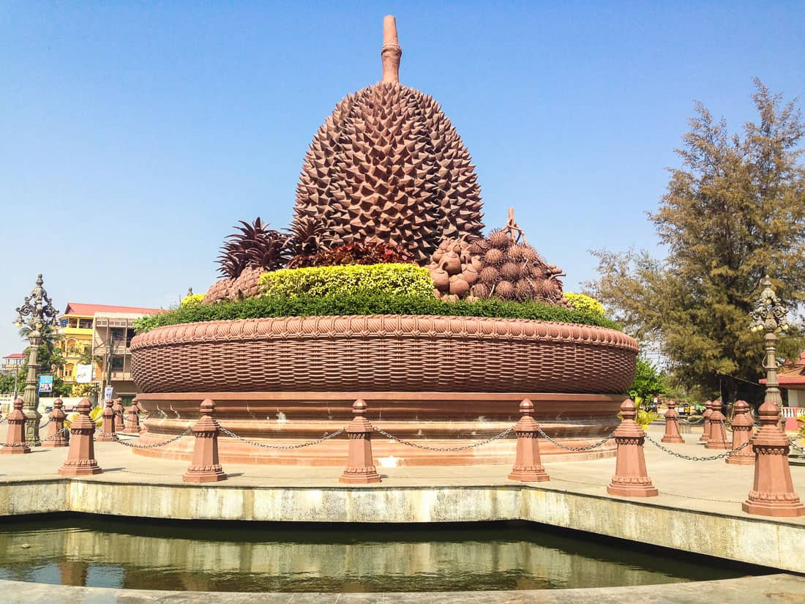
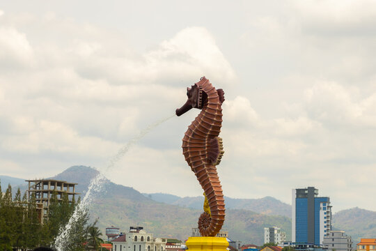

KAMPOT
 Kampot (Khmer: ក្រុងកំពត) is a city in southern Cambodia and the capital of Kampot Province. It is on the Praek Tuek Chhu River, southeast of the Elephant Mountains, and around 5 km (3 mi) from the Gulf of Thailand.[2] Kampot was the capital of the Circonscription Résidentielle de Kampot under French rule and Cambodia's most important seaport after the loss of the Mekong Delta and before the establishment of Sihanoukville.[3] Its center is, unlike most Cambodian provincial capitals, composed of 19th-century French colonial architecture. The region and town are known for high-quality pepper, which is exported worldwide.[4] It is also known for its fish sauce[5] and durian.[6] The government and the Ministry of Culture and Fine Art have been preparing documents to nominate the Old Town of Kampot for admission to the UNESCO World Heritage Site list (along with T the Old Town of Battambang and the Old Town of Kratie), since 2017.
Kampot Province had a population of 627,884[3] in 2010 and consist of eight districts divided into 92 communes with a total of 477 villages.[4] Touk Meas City is located in the province.
 In the 19th century, during the French Indochina period, Kampot became a regional administrative center with the status of a state border district as a result of the delimitation of the Kingdom of Cambodia. The Circonscription Résidentielle de Kampot contained the arrondissements of Kampot, Kompong-Som, Trang and Kong-Pisey.[5][6]
In 1889, French colonial census reports a multi-ethnic community: Kampot town consisted of "Cambodian Kampot" on the Prek-Kampot River and "Chinese Kampot" on the right riverbank of the west branch of the Prek-Thom River. Nearby was also a Vietnamese village, called Tien-Thanh and another Vietnamese village on Traeuy Koh Island. A Malay also existed on Traeuy Koh Island. Additional villages of mixed ethnicity are listed.[7]